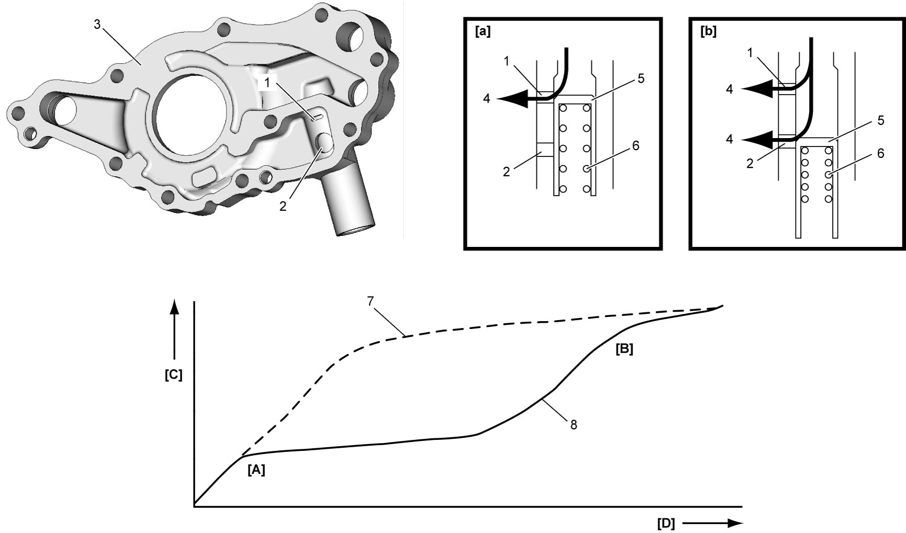

1E
| Engine Lubrication Description |
The oil pump is of a trochoid type equipped with two-stage relief valve which restricts excessive oil pressure at low and medium engine revolution ranges and is rotated by the crankshaft. The oil is drawn up through the oil pump strainer and passed through the pump to the oil filter.
The filtered oil flows into two paths in cylinder block.
In one path, the oil goes to the crankshaft. The oil going to the crankshaft goes to the crankshaft main bearings. The oil from the crankshaft main bearings is supplied to the connecting rod bearings by means of intersecting passages drilled in the crankshaft, and then injected from each big end of connecting rod to lubricate piston, piston rings and cylinder wall.
In the other path, oil goes up to the cylinder head and lubricates valves and camshafts etc., after passing through the internal oil path of camshafts.
The oil pump provided with two-stage relief valve has No.1 relief hole (1) and No.2 relief hole (2) in the rotor plate (3).
The two-stage relief valve works as follows after warming up the engine.
The engine revolution is at low [a], oil pressure is relieved through No.1 relief hole to suction side (4) of the rotor housing for recirculation and reduces oil pump driving torque. In this stage, oil pressure is low and relief valve (5) is pushed down by low pressure.
The engine revolution is at high [b], oil pressure is relieved through No.2 relief hole as well and oil pressure is regulated within the specified range. In this stage, oil pressure is high and relief valve is pushed down by high pressure.
Correlation of the oil pump discharge pressure [C] and the engine revolution [D] is as follows.

 "Expand image")
| [A]: | No.1 relief hole starts open [a] | 7. | Without two-stage relief valve (conventional oil pump) |
| [B]: | No.2 relief hole starts open [b] | 8. | With two-stage relief valve (new oil pump) |
| 6. | Relief valve spring |